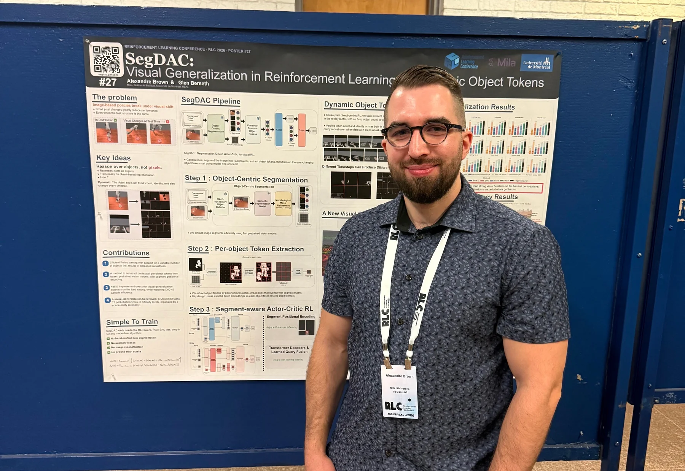
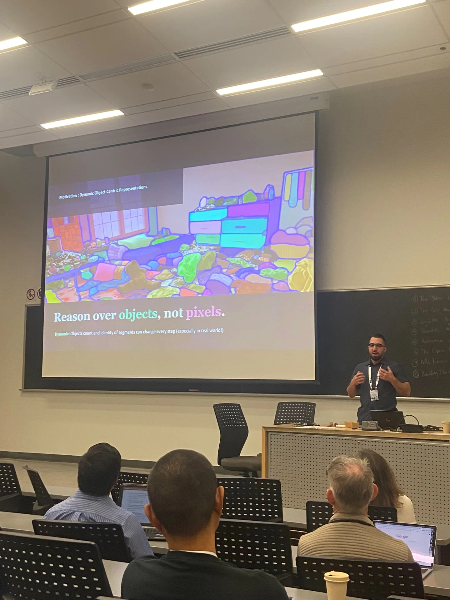
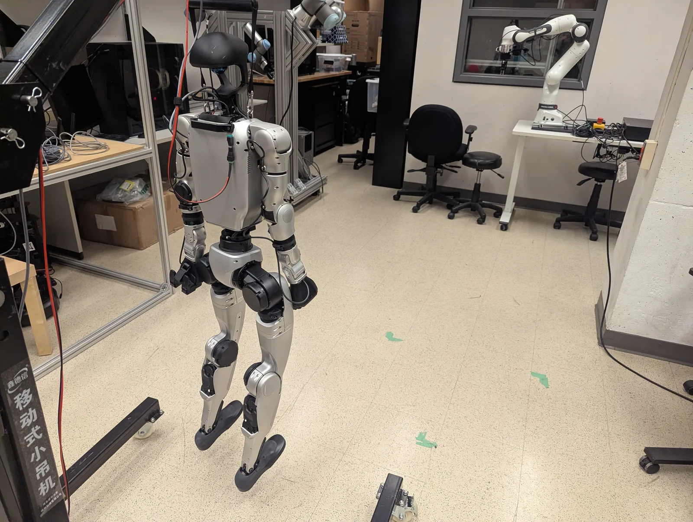
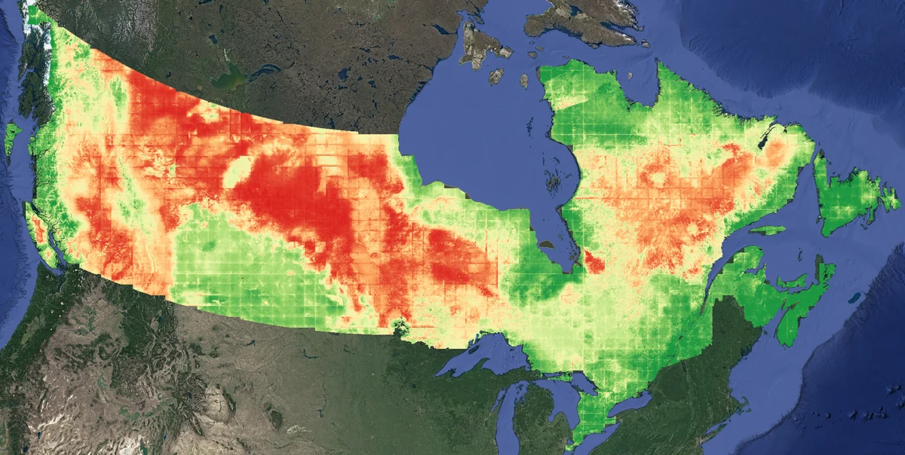
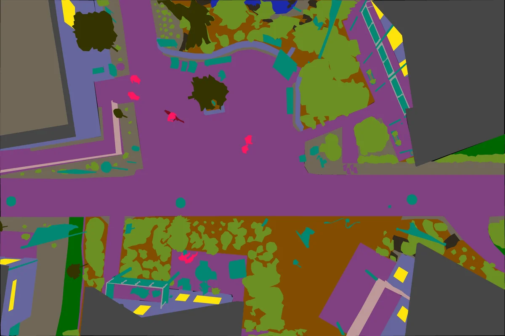
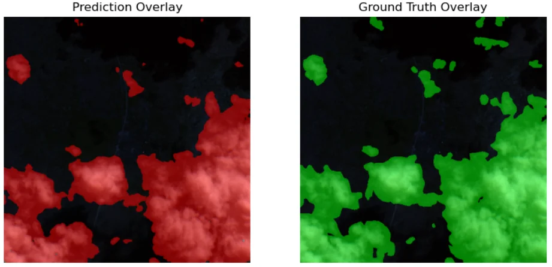
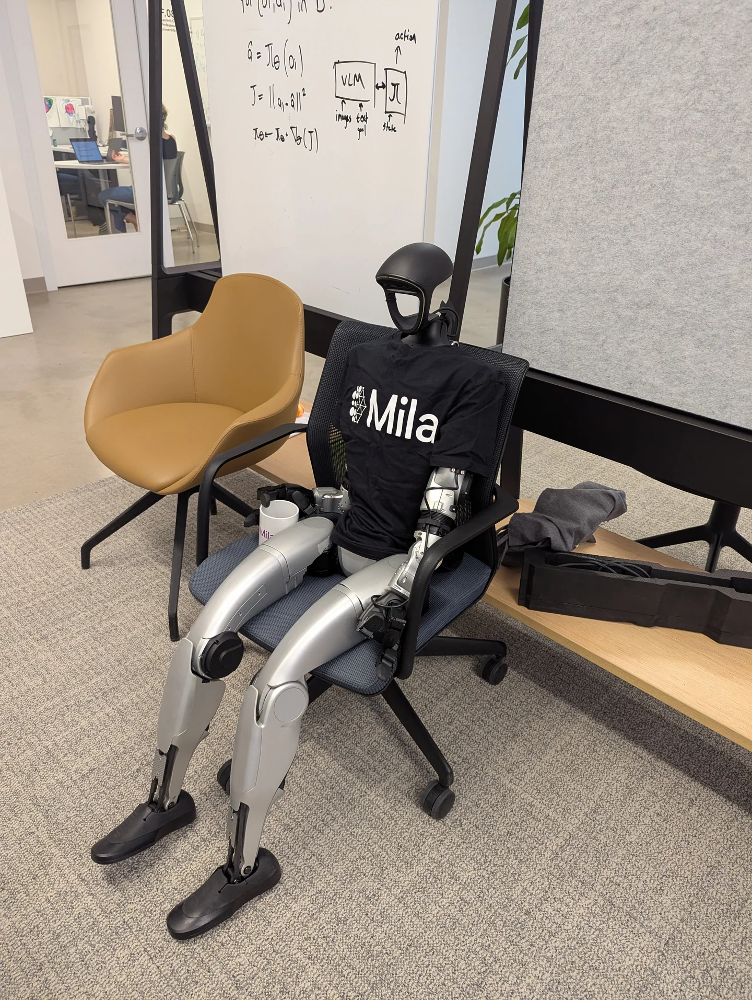
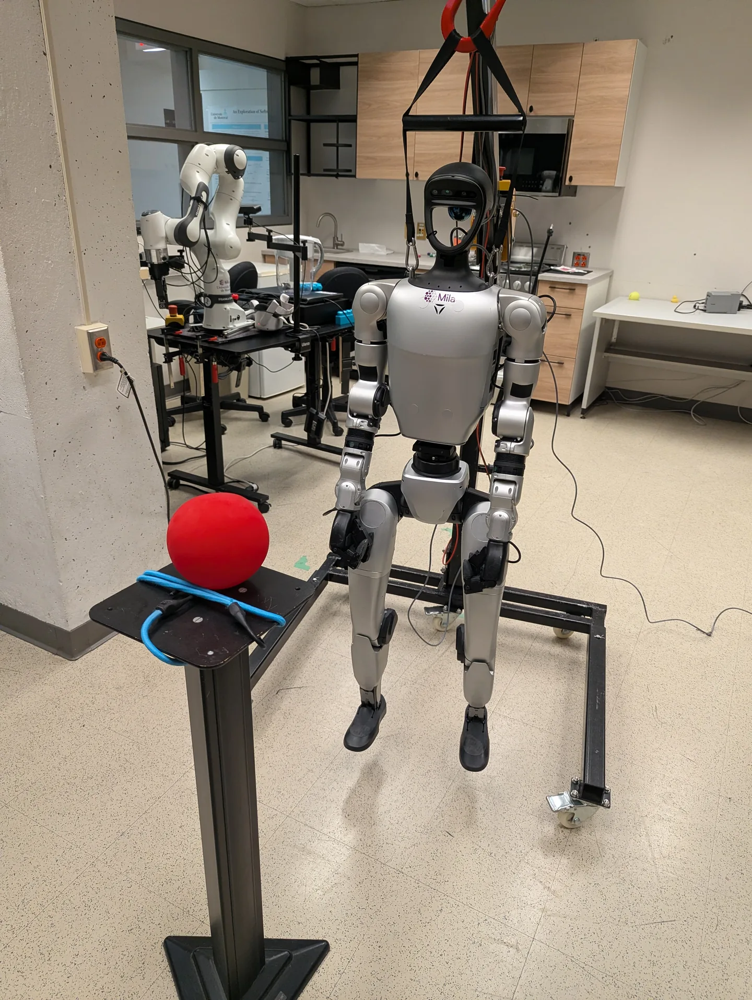
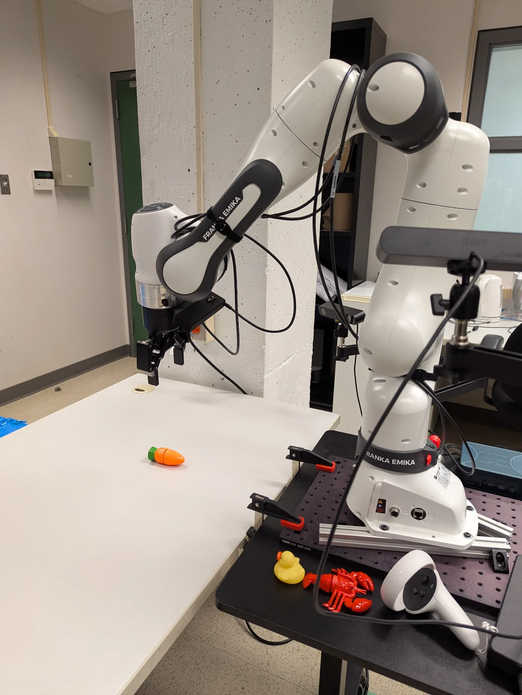

SegDAC accepted at RLC 2026
Published in Reinforcement Learning Journal, volume 7. Presented in a conference talk and poster session in Montréal.
Reinforcement learning & robotics
Scaling unsupervised RL
for humanoids.
I'm a PhD student at Université de Montréal (UdeM) and a researcher at Mila - Quebec AI Institute and the Robotics and Embodied AI Lab (REAL), advised by Glen Berseth.
I study RL pretraining for humanoid loco-manipulation. I'm interested in general learning and search methods that scale with compute and autonomous experience, following the Bitter Lesson.
Published in Reinforcement Learning Journal, volume 7. Presented in a conference talk and poster session in Montréal.
My goal is to build behavior foundation models that learn useful skills before a task is specified. I focus on large-scale unsupervised RL and zero-shot transfer for humanoid locomotion and manipulation, using RGB observations and minimal task-specific supervision.
My work on SegDAC studied visual generalization in RL. I now want to scale the capabilities robots can learn through interaction, with methods that keep improving as compute and experience grow.
RLC 2026 Reinforcement Learning Journal · Vol. 7


RLC 2026 · August 15-18, 2026 · Université de Montréal, Montréal, QC
Real-world humanoid control
Real-world zero-shot loco-manipulation on the Unitree G1, combining GPT 6.1 Terra with NVIDIA SONIC motion tracking for goal-reaching. The agent uses only a single egocentric RGB frame and proprioceptive information.

Real world humanoid deploymentSim-to-sim & sim-to-real
A lightweight starting point for low level control with the Unitree Python SDK and policy validation across MuJoCo, Isaac Lab, and real hardware.
Reinforcement learning
Reinforcement learning models for electric vehicle charging assignment and scheduling.

Machine learning & remote sensing
An end-to-end pipeline built from scratch for wildfire forecasting across Canada, from automated geospatial data downloads at scale and preprocessing to deep learning model training and evaluation.

Earlier work · Computer vision
Deep learning for semantic segmentation of high-resolution aerial imagery.

Earlier work · Computer vision
Detecting clouds and cloud shadows in satellite images.
Before my PhD, I worked in machine learning and software engineering, with projects in computer vision and remote sensing.
2025–present
Université de Montréal
2024–2025
Université de Montréal
2021–2024
Université Laval
2015–2019
Diploma of College Studies
Sep 2024–present
Mila
May–Sep 2024
Intact
Nov 2023–May 2024
Université Laval
Aug 2021–Oct 2023
Microdrones
Jan 2019–Aug 2021
Microdrones
Aug 2018–Jan 2019
TELUS


